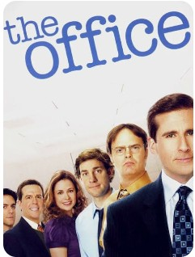

Tudo sobre The Office USA
The Office é uma série de televisão norte-americana em formato de mocumentário criada por Greg Daniels e exibida pela NBC. É baseada na sitcom homônima britânica, transmitida entre 2001–2003 pela BBC e concebida por Ricky Gervais e Stephen Merchant.
Sinopse
O programa retrata o cotidiano dos funcionários da filial da empresa de papel Dunder Mifflin em Scranton, Pensilvânia, e foi ao ar de 24 de março de 2005 a 16 de maio de 2013, com um total de nove temporadas consistindo em 201 episódios.
Assim como a versão original, a série foi filmada em câmera única sem plateia no estúdio ou risadas de fundo, para imitar a aparência de um documentário real. Seu elenco principal original foi composto por Steve Carell, Rainn Wilson, John Krasinski, Jenna Fischer e B. J. Novak. O programa passou por numerosas mudanças em sua equipe durante a exibição, com destaque para saída de Carell após a sétima temporada.
Produção
Greg Daniels adaptou a série britânica The Office para a televisão estadunidense e atuou como showrunner nas primeiras quatro temporadas. Ele então deixou o cargo quando co-criou a sitcom Parks and Recreation com seu colega Michael Schur, e dividiu seu tempo entre os dois programas. Com sua ausência, Paul Lieberstein e Jennifer Celotta foram nomeados desenvolvedores. Celotta deixou a série após a sexta temporada e Lieberstein permaneceu na função por mais dois anos. Ele abandonou o posto em seguida com a expectativa da produção de um spin-off sobre Dwight Schrute, intitulado The Farm, que acabou sendo recusado pela NBC. Daniels retornou ao cargo original para a nona e última temporada. Outros produtores executivos incluem B. J. Novak e Mindy Kaling.
Kaling, Novak, Daniels, Lieberstein e Schur formaram a equipe principal de roteiristas.[11] Kaling, Novak e Lieberstein também desempenharam múltiplas funções, pois interpretaram personagens regulares, além de terem dirigido e produzido. Creditada com vinte e quatro episódios, Kaling é a roteirista mais prolífica entre a equipe.
